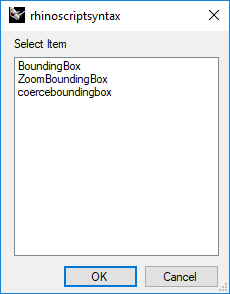

Two's company, three's a crowd üîó
My version of YAGNI - "You Ain't Gonna Need It" - is a rule of three: only spend time refactoring your code when you have repeated yourself 3 times. Don't aim for truly DRY code devoid of all repetition.
I'm not saying not to apply SOLID design principles from the start - I definitely try to separate concerns, giving a single responsibility to a class or function and avoid, for instance, a single method handling file reading, data transformation and reporting. This simplicity will make it much easier to refactor the code later.
I am saying to avoid using sophisticated design patterns, architecture or abstractions before you have used of your code enough to know what is likely to change (and require encapsulation) and what will stay constant (creating a useful abstraction).
My recipe for success
- Write simple code, leaning on the S from SOLID - separating code into small logical blocks
- When you find yourself repeating the same code 3 times, refactor it into a function or class
- Yes 3. When you have 3 sufficiently different examples of the same pattern, reach for design patterns and modularisation. Have fun. Don't be afraid to delete your existing code and start again using all you have learned.
Further reading
- Solid design principles
- Design Patterns: elements of reusable object oriented software (Gang of Four)
- Head First Design Patterns : Standard reusable code patterns to help meet the solid principals
- Podcast on anti-patterns
Conlin Durbin makes a similar point for front-end code in his article Stop trying to be so DRY, instead Write Everything Twice (WET).
The Zen of Python: Gur Mra bs Clguba. üîó
I love The Zen of Python - one of the delights of the language is typing import this in a REPL and discovering this gem:
>>> import this
The Zen of Python, by Tim Peters Beautiful is better than ugly. Explicit is better than implicit. Simple is better than complex. Complex is better than complicated. Flat is better than nested. Sparse is better than dense. Readability counts. Special cases aren't special enough to break the rules. Although practicality beats purity. Errors should never pass silently. Unless explicitly silenced. In the face of ambiguity, refuse the temptation to guess. There should be one-- and preferably only one --obvious way to do it. Although that way may not be obvious at first unless you're Dutch. Now is better than never. Although never is often better than *right* now. If the implementation is hard to explain, it's a bad idea. If the implementation is easy to explain, it may be a good idea. Namespaces are one honking great idea -- let's do more of those!
It neatly captures the way in which Guido van Rossum and a group of Pythonistas thought about the language, constructed and used it, sharing thoughts on user forums in in-person meetings.
But I think it is particularly well paired with the source code of this module, which is notable for breaking almost all of the suggestions from the poem in a huge kludge of unreadable script with ROT-13 text and single-letter variable names:
>>> import inspect, this >>> print(inspect.getsource(this)) s = """Gur Mra bs Clguba, ol Gvz Crgref Ornhgvshy vf orggre guna htyl. Rkcyvpvg vf orggre guna vzcyvpvg. Fvzcyr vf orggre guna pbzcyrk. Pbzcyrk vf orggre guna pbzcyvpngrq. Syng vf orggre guna arfgrq. Fcnefr vf orggre guna qrafr. Ernqnovyvgl pbhagf. Fcrpvny pnfrf nera'g fcrpvny rabhtu gb oernx gur ehyrf. Nygubhtu cenpgvpnyvgl orngf chevgl. Reebef fubhyq arire cnff fvyragyl. Hayrff rkcyvpvgyl fvyraprq. Va gur snpr bs nzovthvgl, ershfr gur grzcgngvba gb thrff. Gurer fubhyq or bar-- naq cersrenoyl bayl bar --boivbhf jnl gb qb vg. Nygubhtu gung jnl znl abg or boivbhf ng svefg hayrff lbh'er Qhgpu. Abj vf orggre guna arire. Nygubhtu arire vf bsgra orggre guna *evtug* abj. Vs gur vzcyrzragngvba vf uneq gb rkcynva, vg'f n onq vqrn. Vs gur vzcyrzragngvba vf rnfl gb rkcynva, vg znl or n tbbq vqrn. Anzrfcnprf ner bar ubaxvat terng vqrn -- yrg'f qb zber bs gubfr!""" d = {} for c in (65, 97): for i in range(26): d[chr(i+c)] = chr((i+13) % 26 + c) print("".join([d.get(c, c) for c in s]))
Feature flags Pt 2: Start small üîó
In our team we started with the smallest possible shareable system - a flags namespace in our front-end code. We later adopted an existing open source library in the back end. This got me thinking - what is the smallest possible feature flag system?

Here's a Hello World example...
The world without flags
# greet.py print("Hello, world!")
Let's test it:
python -m greet Hello, world!
Add a flag
I have a great idea for a new flagship feature - the script will ask the user's name and greet them personally!
What's the easiest way to add feature flags to a python script? For demonstration purposes we will just add a command line argument but this could be done with an environment variable or by looking at the user id or configuration. We put the flag-specific code inside an if-statement and keep common code outside the flagged block:
# greet1.py import sys personal_flag = "personal" in sys.argv if personal_flag: greeted = input("What's your name? ") else: greeted = "World" print(f"Hello, {greeted}!")
Let's run this new feature up the flagpole and see who salutes:
> python -m greet1 Hello, world! > python -m greet1 personal What's your name? Graham Hello, Graham!
Remove the flag
I love this feature, the team loves it - we have tested it in production by activating the flag and our users love it too. Now it's time to remove the flag and tidy up the code:
# greet2.py greeted = input("What's your name? ") print(f"Hello, {greeted}!")
That's much cleaner - glad I removed the feature flag! Testing it...
> python -m greet2 What's your name? Graham Hello, Graham!
Perfect!
Feature flags Pt 1: Faster feature development with flags. üîó
The greatest accelerator of my team's work last year was adopting feature flags. With flags we ship features faster, more confidently and with less stress. We have fewer merge conflicts despite frequently working together on the same part of the code base.

Saracen Joust in Arezzo: Exhibition of the flag-wavers from Archivio Istituzione Giostra del Saracino del Comune di Arezzo
In this post I will share the advantages and potential pain points we have seen. For context we are a team of 5 developers working together on a back end api and front end web app for business users. We have moved towards trunk-based development, avoiding long-running branches.
What are Feature Flags ?
A feature flag lets you turn parts of your code on or off for some or all users, or based on other conditions such as date, time, region, etc.
✅ In this post I am talking about short-lived flags used during development.
❌ I am not talking about permanent aspects of your app such as customisations for individuals or groups of users.
Advantages
- Fewer merge conflicts üéå. This is the biggest plus: Hiding features which are incomplete or not yet launched behind a flag lets you merge more frequently safe in the knowledge that the new feature is not going to break existing code. By sharing more often, avoiding long-running branches, you hugely reduce the risk of big merge conflicts
- Earlier collaboration üè≥Ô∏è‚Äçüåà. Sharing your code earlier means you can start collaborating quickly with other developers, product, sales and designers. There is nothing better for discussion and collaboration than working code.
- Early feedback. By turning on features for trusted customers and partners you can get early feedback on the design and functionality.
- Increased productivity. All of this means you are shipping impactful changes earlier with less wasted effort.
Pain points
Sounds too good to be true? There is no such thing as a free lunch - here are some possible downsides:
- Upfront investment It takes time to develop a feature flag system or adopt an external solution and you need to convince the team that the effort is worth it. I hope this blog post helps with that! Adopting feature flags may imply changes to your branching, code review, deployment and ci / cd system.
- Complexity Each flag adds a new code path - be wary of layering complexity or nesting flags in complex ways. Creating, updating and deleting each flag takes time so do not add them unnecessarily for small features.
- Removal At some point the flag code needs to be removed. Avoid keeping unused features behind deactivated flags or accepted features inside permanently active flags "just in case".
Recommendations
- Start small In our team we started with the smallest possible shareable system - a flags namespace in our front-end code. We later adopted an existing open source library in the back end.
- Work together. Ensure that everyone is adopting the system where appropriate, discuss any challenges as a team and look for solutions. Change course as necessary.
Result pattern - An exceptional way to handle errors üîó
People often say that in Python you should use exceptions - "Easier to Ask Forgiveness than Permission" (EAFP) over guard clauses - "Look Before You Leap" (LBYL), but the Result design pattern - returning an object which explicitly states whether the operation succeeded is a useful alternative where error handling is required and, as I learned by exploring in more depth, it can be compatible with both approaches.
As my design patterns repo approaches 100⭐ on GitHub I decided to add the Result design pattern to the mix
EAFP vs LBYL
or Graham plays with GitHub Code Search
Prompted by a post on Mastodon I looked a bit more into which patterns people are using for error handling specifically for attribute lookup: I'm surprised to see twice as many references to hasattr as for "except AttributeError"
and not only for dynamic lookups but also for general attribute search, so a win for LBYL vs EAFP style with Python, despite the latter often being recommended ?
üéºTrouver un musicoth√©rapeuteüéº üîó
Ma femme est non seulement une superbe musicienne mais aussi une musicothérapeute : elle soigne les gens, ou les aide à se soigner eux-mêmes, avec de la musique!
J'ai crée cette carte des musicothérapeutes français avec la méthode suivante:
- Scrape le site web de la Fédération Française de Musicothérapie avec Requests et Beautiful Soup
- Géocoder les addresses de tous les musicothérapeutes via OSM (cette partie prend plusieurs minutes)
- Créer une carte avec un marqueur par musicothérapeute avec Folium.
- Enregistrer la carte sous format html
J'utilise la fonction suivantes pour générer mes tags HTML pour les marqueurs:
def tagged(txt:str, tag:str): str = txt.strip() if str: return f"<{tag}>{txt}</{tag}>\n" else: return ""
Game of life in Rhino 3D üîó
Hello.
Prompted by this year’s Advent Of Code challenge I have implemented a 3D version of the game of life in Python in Rhino 7.
Here are some images renders from individual steps in my solution, followed by the code I used to generate them.

import rhinoscriptsyntax as rs import Rhino from itertools import permutations from collections import defaultdict def conway_cubes(rounds): rs.EnableRedraw(False) # Example from the puzzle state = """.#. ..# ###""" new_cubes = set() # Build the starting grid for y, row in enumerate(state.splitlines()): for x, cell in enumerate(row): if cell == '#': new_cubes.add((x,y,0)) # Initialise sets and lists old_spheres = [] # 27 neighbours neighbouring = set(permutations( [1,1,1,0,0,0,-1,-1,-1],3) ) # a cube is not its own neighbour neighbouring.remove((0,0,0)) for round in range(rounds+1): cubes = new_cubes.copy() rs.DeleteObjects(old_spheres) neighbours = defaultdict(int) old_spheres=[] # Draw cubes and identify neighbours for cube in cubes: old_spheres.append( rs.AddSphere(cube, 0.6) ) for n in neighbouring: neighbours[(cube[0] + n[0], cube[1] + n[1], cube[2] + n[2], )] += 1 new_cubes = set() rs.Redraw() # Create cubes for next round for location, n in neighbours.iteritems(): if location in cubes: if 2 <= n <= 3: new_cubes.add(location) elif n == 3: new_cubes.add(location) rs.EnableRedraw() if __name__ == '__main__': conway_cubes(rounds = 6)
RhinoPython: may the source be with you! üîó
Hello everyone,
I wrote a script to help me code in python and learn RhinoCommon and decided to share it with you üòú
As you may know, the rhinoscriptsyntax library is written in Python and uses rhinocommon functions, also in Python, under the hood. In order to look up the underlying code you can open up the full python file, you can use the inspect module or you can save the script below to your computer and run it each time you want to look up a particular function. For instance if you search for ‘bounding’ you get the following options:

And by clicking on the 3rd option you get the underlying source code, which you can read in the box, copy elsewhere, …

from inspect import getsource, getmembers, isfunction import rhinoscriptsyntax as rs """ Script to view the source code for rhinoscript modules in Rhino 5 + 6 By Graham Knapp for personal use and for the McNeel Discourse forums 13/6/2019 """ def get_source(): search_term = rs.StringBox( 'Function name to search for', title='rhinoscriptsyntax' ).lower() if not search_term: return # (tuples of name, fuction) functions = {name: obj for name, obj in getmembers(rs) if isfunction(obj) and search_term in name.lower()} if not functions: return selected = rs.ListBox(functions.keys(), title='rhinoscriptsyntax' ) if not selected: return the_source = getsource(functions[selected]) box_result = rs.EditBox(the_source, message='Press OK to copy to clipboard', title='Use the source') if box_result: rs.ClipboardText(box_result) return box_result if __name__ == '__main__': get_source()
Here comes the sun üîó
I spend too much of my life sitting alone in an office working on my conputer or looking at my smartphone. My regular dose of fresh air comes from my bike - I ride to work and back regularly - but I also enjoy getting out into the garden when I can. Trouble is, I dont really enjoy gardening! I do get a lot of satisfaction from pruning the trees and shrubs, especially if it involves some climbing and as a result we now have an enormous pile of branches, leaves and twigs in the bottom of the garden. I recently found a new activity which satisfies my creative side and starts to diminish the stack o' cuttings : building 'dead hedge' style walls and fences.


First I sharpen a set of stakes and drive them into the ground, then I weave branches beween the stakes and finally I stuff twigs and leaves between the branches. I always end up full of splinters with a big grin on my face.

Before and after


Any way the wind blows üîó
Adding leading zeros with Python
Various ways to add leading zeros to a number, for instance a wind direction, using Python. Available as a Jupyter Notebook
Generate a list of wind directions
First some definitions. The wind direction is measured in degrees clockwise from north and represents the direction the wind is blowing from. For instance an easterly wind, i.e. wind blowing from the east has a direction of 90 degrees. Let's generate 16 wind directions from 0 (north) to 337.5 (north by northwest).
interval = 22.5 # degrees assert 360 % interval < 0.001 n = int(360/interval) directions = [interval * x for x in range(n)] print(directions)
[0.0, 22.5, 45.0, 67.5, ... 337.5]
String zfill method
No doubt the most pythonic way to add leading zeros to a bare string, the built-in str.zfill() method is designed to do just that.
for dir_ in directions: print(str(int(dir_)).zfill(3), str(dir_).zfill(5))
000 000.0 022 022.5 045 045.0 067 067.5 090 090.0 112 112.5 135 135.0 157 157.5 180 180.0 202 202.5 225 225.0 247 247.5 270 270.0 292 292.5 315 315.0 337 337.5
We can immediately see our first quirk: the integer representation truncates decimal values rather than rounding up (as I learned to do at school) or rounding towards the nearest even number (as the Python round() funtion would do).
String slicing
Very fast and arguably even more readable for people with a good understanding of basic python syntax but no desire to read the docs or explore the obscure corners of the language. Add the maximum possible number of leading zeros and then slice the desired number of digits.
for direction in directions: print(('00'+str(int(direction)))[-3:], ('00'+str(direction))[-5:])
000 000.0 022 022.5 045 045.0 067 067.5 090 090.0 112 112.5 135 135.0 157 157.5 180 180.0 202 202.5 225 225.0 247 247.5 270 270.0 292 292.5 315 315.0 337 337.5
String format : integers
As part of a longer string this allows the number to be inserted with leading zeros. Compatible with all current versions of Python.
for direction in directions: print('Int: {:03d} | Float: {:05.1f}'. format( int(direction), direction) )
Int: 000 | Float: 000.0 Int: 022 | Float: 022.5 Int: 045 | Float: 045.0 Int: 067 | Float: 067.5 Int: 090 | Float: 090.0 Int: 112 | Float: 112.5 Int: 135 | Float: 135.0 Int: 157 | Float: 157.5 Int: 180 | Float: 180.0 Int: 202 | Float: 202.5 Int: 225 | Float: 225.0 Int: 247 | Float: 247.5 Int: 270 | Float: 270.0 Int: 292 | Float: 292.5 Int: 315 | Float: 315.0 Int: 337 | Float: 337.5
F Strings
From Python 3.6 this is even terser.
for dir_ in directions: print(f'Int: {int(dir_):03d} | Float: {dir_:05.1f}')
Int: 000 | Float: 000.0 Int: 022 | Float: 022.5 Int: 045 | Float: 045.0 Int: 067 | Float: 067.5 Int: 090 | Float: 090.0 Int: 112 | Float: 112.5 Int: 135 | Float: 135.0 Int: 157 | Float: 157.5 Int: 180 | Float: 180.0 Int: 202 | Float: 202.5 Int: 225 | Float: 225.0 Int: 247 | Float: 247.5 Int: 270 | Float: 270.0 Int: 292 | Float: 292.5 Int: 315 | Float: 315.0 Int: 337 | Float: 337.5
Class
By overloading the built-in __str__() method for the class we can create our own custom string representation of the value.
class WindRecord(int): def __init__(self, direction): self.direction = direction def __str__(self): return f'Wind direction: {self.direction:05.1f} °' for direction in directions: d = WindRecord(direction) print(d)
Wind direction: 000.0 ° Wind direction: 022.5 ° Wind direction: 045.0 ° Wind direction: 067.5 ° Wind direction: 090.0 ° Wind direction: 112.5 ° Wind direction: 135.0 ° Wind direction: 157.5 ° Wind direction: 180.0 ° Wind direction: 202.5 ° Wind direction: 225.0 ° Wind direction: 247.5 ° Wind direction: 270.0 ° Wind direction: 292.5 ° Wind direction: 315.0 ° Wind direction: 337.5 °
Thanks to @clement for comments